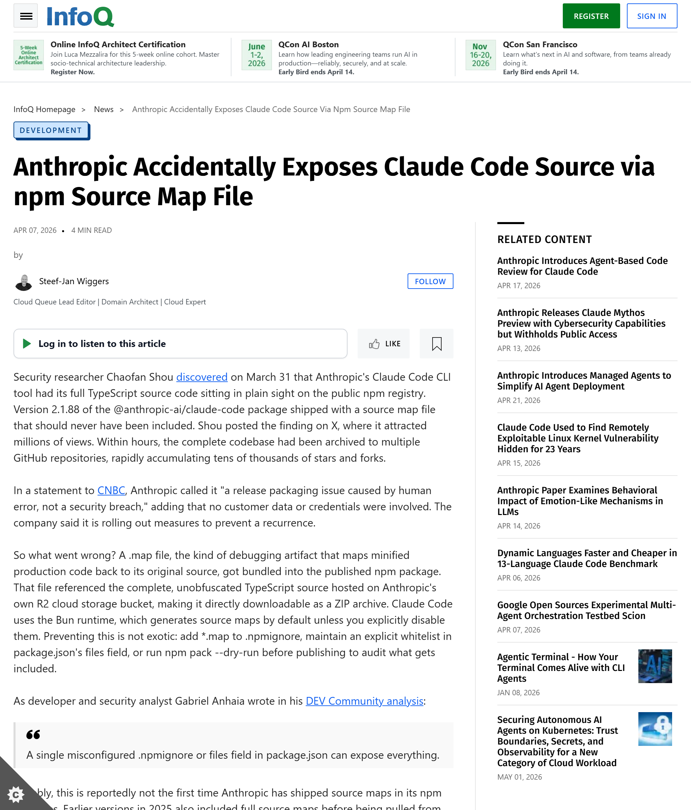

March 31, 2026
Anthropic just lost control of
LEAKED
Source map slips out via npm v2.1.88
infoq.com/news/claude-code-source-leak

What got out
Half a million lines, free for all
513K
lines exposed
41K
forks in hours
The fallout
Apr 1
DMCA blitz
8,100 takedowns filed
01
Apr 2
Walked back
Bulk retracted
02
Mar 31
Claw-Code rises
75K stars in hours
03
The twist
90%
written by Claude itself
NO ©
U.S. courts: AI work, no copyright
Who owns the code?
Drop your answer↓
github.com/coleam00
Built with Cole · github.com/coleam00